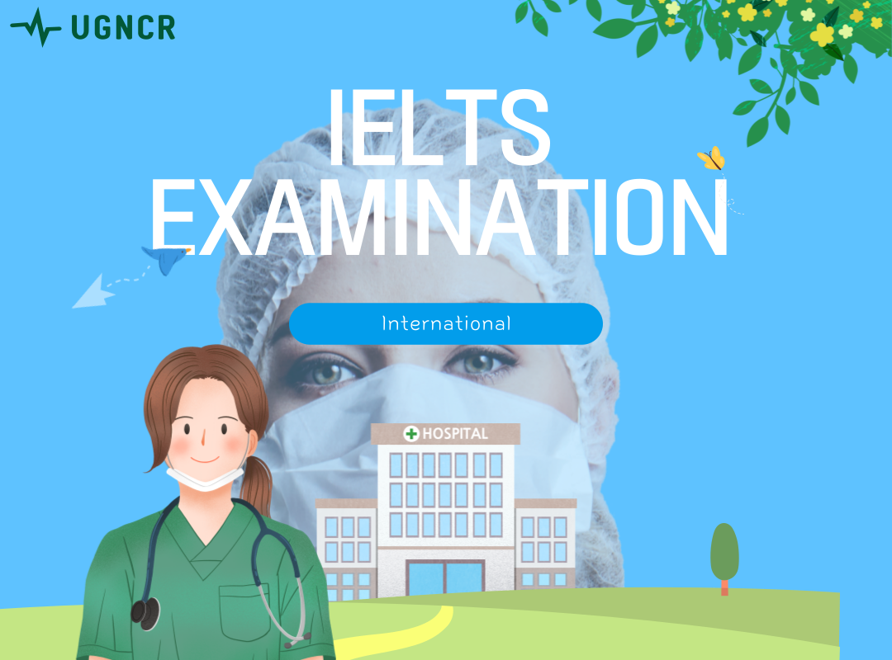

What is IELTS ?
IELTS in full is International English Language Testing System that is designed to help you work, study or migrate to a country where English is the native language. This includes countries such as Australia, Canada, New Zealand, the UK and USA.
Your ability to listen, read, write and speak in English will be assessed during the test. IELTS is graded on a scale of 1-9. ELTS is jointly owned by the British Council; IDP IELTS; and Cambridge University Press & Assessment.
So how does Uganda Nurse Career Resourcing engage in this test, we provide online lessons and ideas on how to learn and pass this international English test.
Why take IELTS ?
If you are looking to work, live or study in an English-speaking country, then you must be able to demonstrate a high level of English language ability. And you know a nurse must communicate with his/her patient and English could be the language.
Sincerely speaking English is the third most spoken language in the world or maybe even the most with over 379 million speakers worldwide, its seen in all sectors and beneficial ones like business and so nursing work.
IELTS is the most popular test for those looking to migrate to Australia, Canada, New Zealand and the UK. It is globally recognised by more than 11,000 employers, universities, schools and immigration bodies including 3,400 institutions in the USA. So by taking this test there is maybe no regrates or its a concern.
What IELTS score do I need?
The higher you can score in your IELTS, reflects a better understanding and ability to communicate in English. Each immigration body, university, workplace or institution will have specific IELTS score requirements. The score you need will depend on what you are looking to do in the country, i.e work or study.
How we help?
We give guidance on how to pass the test and also teach skills for tackling the test.
So go ahead and contact CEO Mubiru Francis and his team so you can get this advise in full swing.